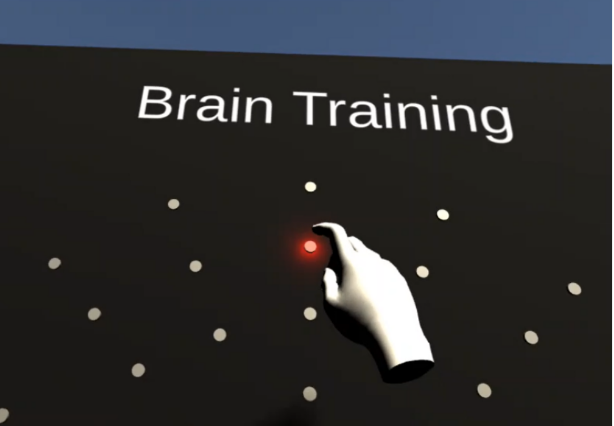
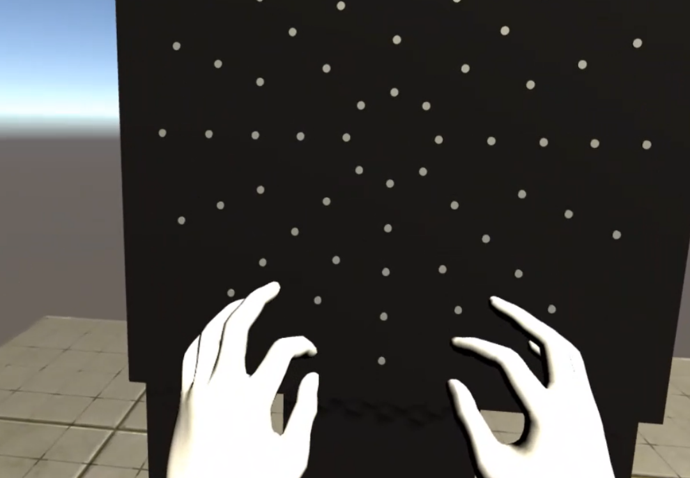

- Implementing Oculus movement
- Supporting Oculus hand tracking
- Creating the board with lights
- Making the lights respond to hand tracking
IMAGES


ABOUT THE APPLICATION
The brain trainer was an experiment to test out the newly released Oculus Quest hand tracking. It is based of a DynaVision board that is used to help people with head trauma.
One of the reasons I chose this is that my mother has had to use a board like this and she told me there is a lack of cheaper ways of doing this. This is purely a concept, but it could be used to help people in that situation if eventually developed further.
One of the reasons I chose this is that my mother has had to use a board like this and she told me there is a lack of cheaper ways of doing this. This is purely a concept, but it could be used to help people in that situation if eventually developed further.
SPECIFICATIONS
VIDEO
MY RESPONSIBILITIES
My responsibilities during this project:
- Implementing Oculus movement
- Supporting Oculus hand tracking
- Creating the board with lights
- Making the lights respond to hand tracking
MY WORK HIGHLIGHT
Possible improvements
One improvement that I experimented with for this project is the ability to align the board to an actual wall, so you would have proper touch feedback. Since this was just a short project I did on some days of spare time, I never actually got to finishing this, but I think it would be a great step in making the experience even more immersive (which might be very important if there are medical implications).
ABOUT THE APPLICATION
The brain trainer was an experiment to test out the newly released Oculus Quest hand tracking. It is based of a DynaVision board that is used to help people with head trauma.
One of the reasons I chose this is that my mother has had to use a board like this and she told me there is a lack of cheaper ways of doing this. This is purely a concept, but it could be used to help people in that situation if eventually developed further.
IMAGES
SPECIFICATIONS
Made in Unity
For Oculus Quest
Made in 3 days
MY RESPONSIBILITIES
All of the work on this project was done by me on my own. The concept was based on an existing product, the DynaVision board.
MY WORK HIGHLIGHT
Possible improvements